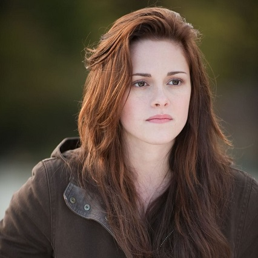

Summit Entertainment — независимая американская киностудия, расположенная в Санта-Монике, Калифорния, с имеющимися офисами в Лондоне, Великобритания.
В январе 2012 года стало известно о приобретении Summit Entertainment компанией Lionsgate, первая потеряла некоторую свободу, но не исчезла навсегда. Она все так же продолжает радовать нас захватывающими историями и яркими киногероями.
Эдвард Каллен — главный герой серии романов Стефани Майер «Сумерки» и одноименной серии фильмов. Эдвард — вампир. Он бессмертен, невероятно силён, быстр, умеет читать мысли и обладает исключительными зрением, слухом и обонянием. Эдвард родился в 1901 году и в семнадцать лет он смертельно заболел испанкой. Эдвард стал первым вампиром, которого создал Карлайл, и его приемным сыном. Это произошло в 1918 году. Карлайл питался исключительно кровью животных, и пытался сделать «вегетарианцем» и Эдварда. Спустя 10 лет Эдвард взбунтовался и сбежал от отца и его новообращённой жены Эсми. С 1927 по 1931 год он жил один, отступив от канонов «вегетарианства», и питался человеческой кровью. Пользуясь своей способностью читать мысли, он находил и убивал маньяков и убийц, считая, что тем самым спасает невинных людей, но потом осознал, что убийству не может быть оправдания, и вернулся к приемному отцу. Нажми сюда для сюрприза:)

БЕЛЛА СВОН
Белла Свон — главная героиня серии романов Стефани Майер «Сумерки» и одноименной серии фильмов. По сюжету Белла переезжает к отцу в небольшой городок Форкс и встречается с загадочной семьей Калленов. В одного из них, молодого Эдварда Каллена, Белла влюбляется. Жизнь Беллы меняется, когда Эдвард спасает ее от фургона, который едва не придавил девушку. Свон потеряв голову хочет узнать, что из себя представляет Каллен и вскоре находит ответ: он и все члены его семьи являются вампирами, однако, девушку это не пугает и они начинают встречаться. Но Эдард осознает насколько это может быть опасно для Беллы, поэтому, в попытке защитить ее от своего образа жизни, он бросает возлюбленную. После этого Белла впадает в депрессию, но частично находит утешение в друге детства — Джейкобе Блэке. Вскоре Эдвард осознает, что Белле угрожает опасность даже если его нет рядом, и приходит к ней на помощь. В будущем пара пережила множество трудностей, но вместе они стали по-настоящему счастливы.
ДЕСМОНД ДОСС
«По соображениям совести» — драма режиссера Мэла Гибсона, основанная на невероятных, захватывающих, но совершенно реальных событиях. А Десмонд Досс — медик и пацифист, чья история жизни легла в основу этого фильма. В сельской местности в Виргинии в 1920-е молодой Десмонд Досс чуть не убил своего младшего брата Хэла во время семейно-бытового скандала. Это событие и его воспитание адвентистами седьмого дня укрепляют веру Десмонда в заповедь «Не убий». После нападения японцев на Перл-Харбор Досс записывается в армию в качестве военного врача. Он превосходен физически, но становится изгоем среди своих однополчан за отказ брать в руки винтовку и тренироваться по субботам по религиозным причинам. Капитан его подразделения попытался признать Десмонда негодным к воинской службе по психиатрическим причинам, но его решение отменяют, поскольку религиозные убеждения Досса не представляют собой психическое заболевание. На поле боя после очередной кровавой битвы Досс слышит крики умирающих солдат и один возвращается, чтобы спасти их. Прибытие десятков раненых, считающихся убитыми, стало шоком для остальной части подразделения. Капитан подразделения Десмонда извиняется за то, что отвергал убеждения Досса и считал их проявлением «трусости» и заявляет, что они не начнут следующую атаку без него. Досс соглашается, но операция откладывается до тех пор, пока он не завершит свои субботние молитвы и не помолится за их подразделение. Досс в итоге ранен взрывом гранаты, но битва выиграна.
ЛОСЬ
Роберт Александр III или просто Лось — герой серии фильмов «Шаг вперед». Он молодой талантливый уличный танцор, который жить не может без тех эмоций, которые ему дарит любимое занятие. Хоть Лось и не является главным героем ни в одном из фильмов данной франшизы, по своей популярности этот персонаж превосходит всех остальных. Чтобы понять, за что его так любят зрители, не нужно никаких слов, нужно просто хоть раз увидеть его в деле.